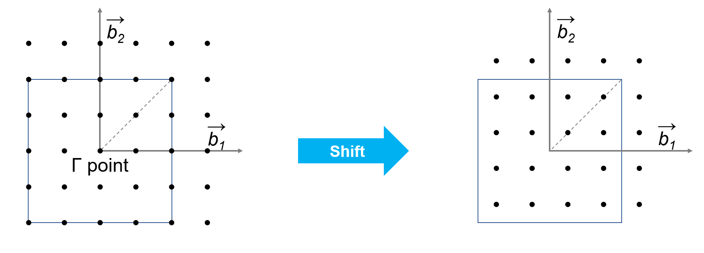
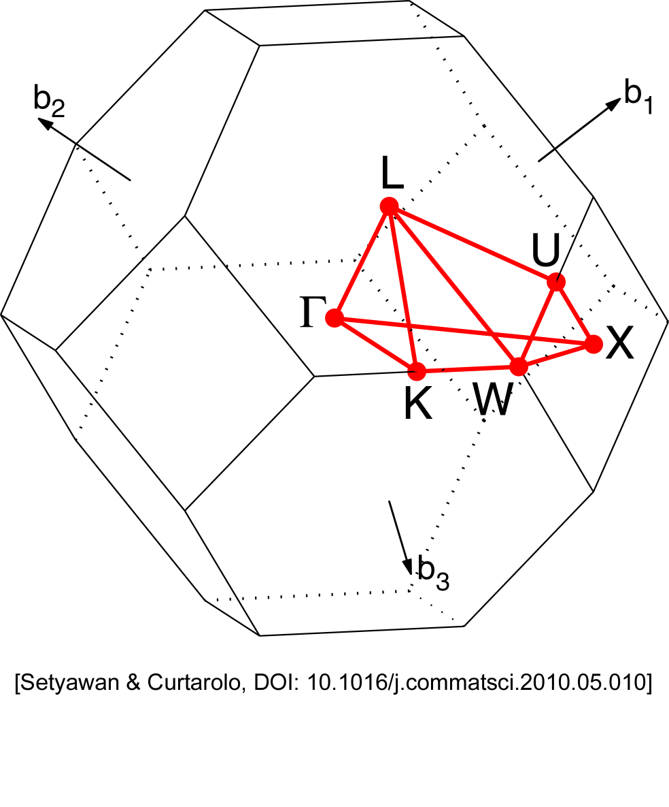
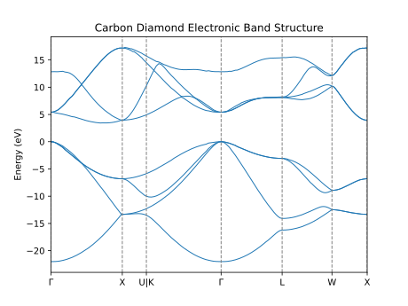

This week we are going to start doing some calculations on solids, i.e.,
periodic crystals. Many of the principles will be the same, but as you will see
there are a few things that need to be done differently.
As before, all the inputs and scripts you need can be found in
/opt/MSE404-MM/docs/labs/lab04 and you should copy the folder to
your home directory.
Basic input for Diamond
As our first example of a crystalline solid we're going to look at diamond. You
can find the input file at C_diamond.in,
here I'll give a brief overview of it:
ibrav=2 specifies a FCC unit cell (for a complete list of ibrav, see
input
descriptions).
crystal specifies that the atomic positions are given in fractional
coordinates of the unit cell vectors (defined by ibrav and
A).
We are using automically generated k-point grid with a 4\(\times\)4\(\times\)4
grid size, 1 1 1 means to shift the grid by one half of a grid spacing in
each direction. By default, the k-point grid is generated such that the grid
is centered around the origin of the reciprocal lattice vectors (\(\Gamma\)
point).
K-point Shift
The k-point shift is a trick that can speed up the calculation by
including less k-points in the calculation. This is because only
k-points in the irreducible Brillouin zone are calculated, and shifting
the grid can help to sample the entire Brillouin zone with fewer points.

k-points
One important difference between periodic crystals and molecules is that the
electronic states are not localised and their wavefunction is given by Bloch's
theorem:
where the electronic states are labelled by both the band index \(n\) and the
k-point \(\mathbf{k}\). As discussed in the lecture, \(\mathbf{k}\) lies in the
first Brillouin zone.
The additional card K_POINTS in the input file specifies the k-point grid.
The first three numbers 4 4 4 represent how many k-points are generated along
each direction of the reciprocal lattice vectors.
The fineness of the k-point grid is a convergence parameters and we must make
sure that it is sufficiently fine such that physically meaningful results are
obtained.
Structure Parameters for Crystals
Now let's take a look at how the atomic positions in the unit cell are specified
in the input file.
Quantum Espresso allows us to express the atomic positions either in absolute
Cartesian coordinates \((x,y,z)\) or alternatively in crystal coordinates
\((x_c,y_c,z_c)\). The position vector of the atom can then be obtained from the
lattice vectors \(\mathbf{a},\mathbf{b},\mathbf{c}\) as follows:
For diamond, which has the same atomic structure as Zinc
Blende,
the atomic structure looks like this:
To specify the shape of the primitive unit cell, we first set ibrav=2, i.e.
face-centred cubic (fcc) Bravais lattice. Internally, with ibrav=2, Quantum
ESPRESSO sets the the fcc lattice vectors as:
Note that here we are using the experimentally measured lattice constant A
of 3.567 Å which might not be the same as the DFT optimized value. In later
labs we'll see how to find the lattice constant predicted by DFT.
In terms of these lattice vectors, the crystal coordinates of the two carbon
atoms are (as we see in the input file, indicated by ATOMIC_POSITIONS
crystal):
Run pw.x for the carbon diamond inside the 01_carbon_diamond directory.
There are a couple of extra things to notice in the output file:
The output lists the automatically generated k-points. How many k-points
are there and why?
Answer
We requested a 4\(\times\)4\(\times\)4 grid but instead in the ouput
file indicates 10 k-points are being used. This is because
Quantum Espresso uses crystal symmetries to relate certain k-points
and to reduce the computational load.
What are the eigenvalues?
Answer
For periodic systems, we have a set of band energies for each
k-point. And these are given in the output file:
Convergence Test for K-Point Grid Above, we used a uniform
4\(\times\)4\(\times\)4 k-point grid to sample the first Brillouin zone. However, to
really converge a periodic system, an additional convergence test with respect
to the k-point sampling is necessary.
To test the convergence of our results with respect to the size of the k-point
grid, we need to calculate the total energy for different grid sizes.
Task 2 - Convergence with respect to k-point sampling and cut-off energy
The directory 02_convergence contains input files to calculate the total
energy. Change the k-point grid size in the input file, run the DFT
calculation and see how the total energy changes. For example, perform a
series of calculations with k-point grids set to 2 2 2, 4 4 4, 6 6
6, ..., all the way to 30 30 30 and see how the total energy changes.
If you have any trouble doing so, you can always go back to
lab03 for help.
Result
To obtain a total energy per atom which is converged to within
10 meV/Atom, we need at least a 10\(\times\)10\(\times\)10 k-point grid.
For every periodic system you simulate, you should converge both the
plane-wave cut-off energy and k-point grid size. To do this, one usually
starts with one parameter set to a very high value and then varies the
other one. Then one repeats this with switched roles. Try do this yourself
and find the best set of parameters for diamond.
Tips
Try starting with ecutwfc of ~60.0 Ry and converge the k-points.
Or start with k-points of 30\(\times\)30\(\times\)30 and converge the
plane-wave cutoff.
The Electronic Band Structure
What is the Electronic Band Structure?
We know that, while the electronic density obtained from DFT is meaningful, the
Kohn-Sham states are not strictly the electronic states of the system.
Nonetheless, they are in practice often a good first approximation of the
electronic states of a system, so can be useful in understanding the properties
of a system.
We have seen how to converge our calculations with respect to the
k-point grid size (task 2), and have found in task 1 that the calculated energy
eigenvalues are a bit different at each calculated k-point. Now we want to study
how exactly these eigenvalues change as we move from one k-point to the next.
Examining how the Kohn-Sham energies change from one k-point to the next can
tell us useful things such as if a material is likely to have a direct or
indirect optical gap. For this it is useful to visualize how the energies change
along a k-point path in the first Brillouin zone. The usual way this is done is
to plot the band energies along lines between the various high-symmetry k-points
in the Brillouin zone. For example, a high symmetry path for a face-centred
cubic (FCC) lattice (see figure below) could be Γ—X—U|K—Γ—L—W—X:

Finding High Symmetry Points and Paths
The details of how such path can be found is beyond the scope of this
course, but an outline is given
here.
Calculating the Electronic Band Structure
The directory 03_bandstructure contains input files to calculate and plot the
band structure of diamond. This a four-step process:
Step 1 - SCF Calculation
The first step is to calculate a converged electron density with a standard
self-consistent field (SCF) calculation. In this step, the electron density is
optimized in order to minimize the total energy of the system. The input file
can be found at
01_C_diamond_scf.in.
Task 3.1 - SCF Calculation
Run the input file
01_C_diamond_scf.in
to calculate the ground state electron density.
1
pw.x < 01_C_diamond_scf.in > 01_C_diamond_scf.out
Step 2 - NSCF(bands) Calculation
The second step is to use the obtained electron density to construct the
Kohn-Sham Hamiltonian at a set of k-points along the path we want to study and
to calculate the Kohn-Sham eigenvalues at those k-points. This is called a
non-self-consistent field (NSCF) calculation as the charge density is kept
fixed.
A brief overview of the
input file is
given below:
&CONTROLpseudo_dir='.'calculation='bands'#(1)!/&SYSTEMibrav=2A=3.567nat=2ntyp=1ecutwfc=30.0# Also add 4 additional bands (unoccupied states)nbnd=8#(2)!/&ELECTRONS/ATOMIC_SPECIESC12.011C.pz-vbc.UPFATOMIC_POSITIONScrystalC0.000.000.00C0.250.250.25# Path here goes: Γ X U|K Γ L W XK_POINTScrystal_b#(3)!80.0000.0000.00030Γ0.5000.0000.50030X0.6250.2500.62500U0.3750.3750.75030K0.0000.0000.00030Γ0.5000.5000.50030L0.2500.5000.75030W0.5000.5001.00000X
calculation = 'bands' specifies that we are calculating the band
structure.
nbnd = 8 specifies that we want to calculate 8 bands. 4 more bands than
the default value of 4. We add these bands so that we can calculate the band
gap later.
K_POINTS crystal_b specifies that we express the high-symmetry k-points
in crystal coordinates. The number of high-symmetry k-points
is 8, followed by the crystal coordinates of each k-point and the number of
points to generate along the section of the path that connects this k-point
to the next one in the list.
Since diamond has a face-centred cubic (FCC) lattice, we have chosen the path
Γ-X-U|K-Γ-L-W-X where U|K means no k-point is sampled between U and K.
Task 3.2 - NSCF Calculation
Run the input file
02_C_diamond_nscf.in
to get the eigenvalues of each band at each k-point.
Take a look at the output, can you find where it says the charge density is
read?
Answer
12
The potential is recalculated from file :
./pwscf.save/charge-density
Step 3 - Extracting Band Energies
Now we need to extract the Kohn-Sham energies from the output file and convert
them into a dataset we can plot.
To do this, we use the bands.x tool from the Quantum Espresso package.
The input file
for bands.x contains only a BANDS section. For more fine-grained control
please refer to
bands.x input description.
Task 3.3 - Extracting band energies
Run the input file
03_C_diamond_bands.in with
bands.x to extract and organize the eigenvalues calculated in the last
step.
Finally, we are ready to plot the band structure. The band structure is
typically plotted with the energy on the y-axis and the high-symmetry k-points
on the x-axis. The energy is usually shifted so that the valence band maximum is
at 0 eV. The directory 03_bandstructure contains a python script
(plotband_shifted.py) that can be used to plot the band structure.
Task 3.4 - Plotting the band structure
Run the python script to plot the band structure of carbon diamond.
1
python plotband_shifted.py
Download the output file C_diamond_bands.png and take a look at it.
Is carbon diamond a metal or an insulator? At which k-points is the valence
band maximum and the conduction band minimum? How large is the band gap (and
is it direct or indirect)?
Final result

From the graph we can see that the valence band maximum is at Γ (the
first point on our path), the conduction band minimum is located between
Γ and X and the size of the indirect band gap is around 4 eV (note that
this is significantly smaller than the experimentally measured band gap
of diamond). Note that here we have shifted the entire spectrum so that
this point is at 0 eV.
Summary
In this lab we learned how to:
achieve k-point convergence in solids.
calculate the electronic band structure of a solid.
We have seen how several calculations may be chained together where the
output of one is used as an input for the next one.
We should always keep in mind that the Kohn-Sham eigenvalues obtained from a
DFT calculation do not correspond to the energy levels of the real interacting
electrons, but are often useful as a first approximation.
 C_diamond.in,
here I'll give a brief overview of it:
C_diamond.in,
here I'll give a brief overview of it: